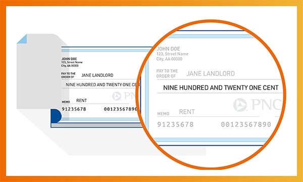

Have you ever looked at a check, wondering what all the numbers mean? If so, you’re not alone. In today’s digital world, paper checks are less common, but knowing how to read a check is still a useful skill. Understanding what a properly written check should look like can help you catch errors, avoid fraudulent checks, and allow you to easily set up electronic transfers.
Whether you have a personal check from a friend, a business check from an employer, or a cashier’s check from a bank, each has the same key elements.
The following guide explains each section of a check and how they work together to facilitate the transfer of funds.
9 Things To Look For When Reading A Check
Understanding exactly what to look for can help you ensure the check you've received is valid and reduce the chances that you could run into problems when it's time to cash or deposit the check. Here are nine important points to review.
1. Date Line
The date line indicates the date the check was written. It is possible to post-date a check, writing a future date on the date line. This is often done with the intention of waiting until the account has sufficient funds to cover the check amount. However, post-dating does not guarantee that the funds won’t be withdrawn until after the date on the check. Most institutions will cash a check as soon as it’s signed by the issuer, regardless of the date written on the date line.
The date line is also important because banks and credit unions can choose not to honor checks that are more than six months old[1]. These are known as “stale-dated checks.” While federal law does not require checks to expire, states may have their own laws regarding check expiration. Some checks indicate on the front that they are only good for 90 days; however, the institution may still honor them for up to 180 days.
2. Check Number
The check number is typically located in the upper right corner of the check. In some cases, it’s also located at the bottom of the check after the symbol at the end of your account number.
Checks are numbered in ascending order, allowing you to easily keep track of checks that have been written. When you write a check, add the check number and the amount to your check register, which is the section in your checkbook where you record deposits and withdrawals. If you use a digital system like Quickbooks or Quicken to record banking transactions and reconcile accounts, enter the information there instead. Recording check information as soon as you write a check will help you keep the account balanced and avoid accidental overdrafts.
3. Payee Name
The payee line is where the check writer indicates the name of the person or business being paid. If the check is made payable to multiple people with the word “and” in between, they must both endorse the check. However, if it is written with the word “or,” then only one of the parties indicated will need to endorse it[2].
It’s critical to write out the payee information clearly and ensure the names are spelled correctly, as this can help avoid problems with cashing the check. If you’re the recipient of a check, make sure your name is clearly written on the payee line.
If the word “Cash” is written on the payee line, the check can be cashed by anyone who has possession of it. While this can be convenient in some situations, it’s also less secure than writing out a specific payee name.
4. Payment Amount In Numbers

The payment box contains the monetary value of the check, written in numbers. This should include the full amount in dollars and cents. For example, the payer may write $50.25 or $30.00.
5. Payment Amount in Words

Under the payment box, there is also a line where the dollar amount is written out in words. For example, a check may have $225.75 written in the payment box and “Two hundred twenty-five dollars and 75/100” written on the line below.
If there is a discrepancy between the amount written in the payment box and the amount written out in words, the bank will typically honor the written amount. You can avoid confusion or potential disputes by ensuring these amounts match before issuing or trying to cash a check.
6. Check Memo
On the check memo line, the payer can add a note regarding the purpose of the check, add an account number related to the purpose of the check (ex; utility bill), or include additional information. This can be helpful for reconciling payments or matching checks to the applicable account number.
7. Endorsement Line
On the back of the check, you’ll find the endorsement line. This is where the recipient of the check signs, verifying that they are the proper recipient and authorizing the bank to process the check on their behalf.
To avoid potential problems with cashing the check, it’s critical that the recipient sign the endorsement line exactly as their name is written on the payee line. Also, avoid writing anything below the endorsement line, as this can lead to complications.
8. Routing Number
At the bottom of your check is a series of machine-printed numbers. The first nine digits on the left are the bank’s routing number, which is a unique code that identifies the institution where the account is held.
When you cash a check, the routing number allows the receiving bank to request the funds from the correct institution. You’ll also need the routing number to set up electronic transactions such as online bill payments, direct deposits, or electronic fund transfers.
9. Account Number
The checking account number is the series of numbers to the right of the routing number. This is a unique identifier for each specific account. When someone writes a check, the bank uses the account number to withdraw funds from their account and deposit them into the payee’s account. Your account number is also needed when setting up electronic transactions.
Some checks may have additional numbers before or after the account number, which may be part of the bank’s internal processing or a way to identify a specific branch location.
Navigating The Numbers
Now that we’ve reviewed the details of how to read a check, you have all the information needed to set up electronic transactions, keep track of your transactions, and handle a paper check with confidence.
If you’re looking for a reliable partner in your financial journey, PNC Bank is here to provide you with the products and services you need.
From checking accounts tailored to fit your lifestyle to online and mobile banking, we offer solutions that empower you to take control of your financial future.